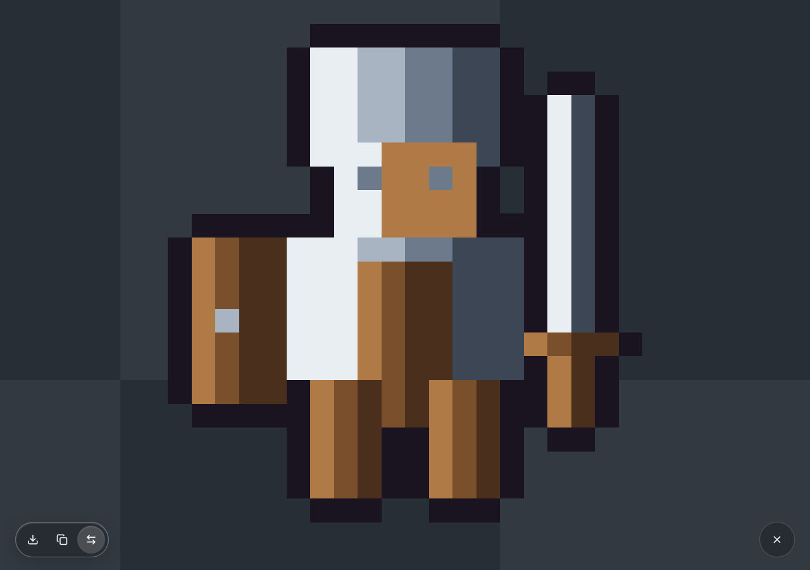
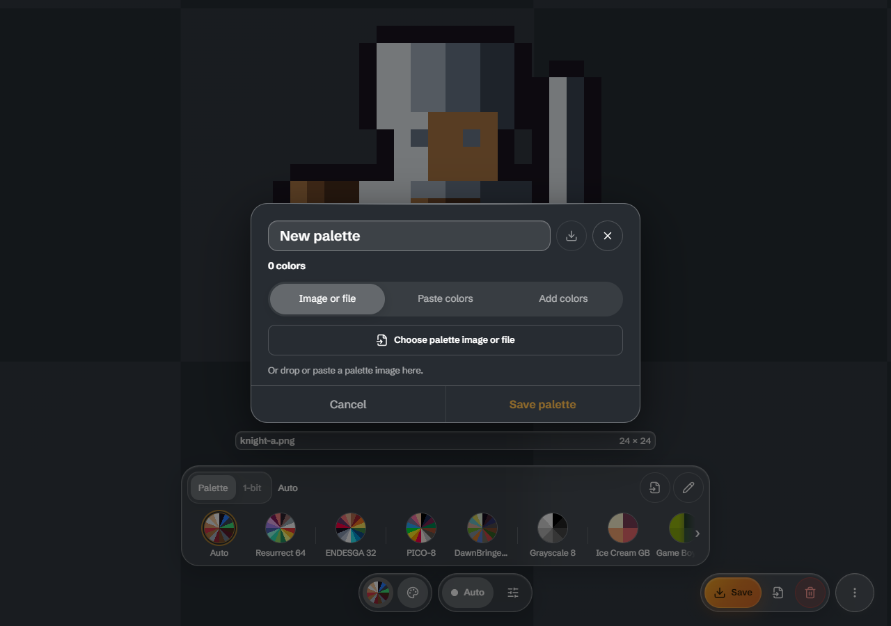
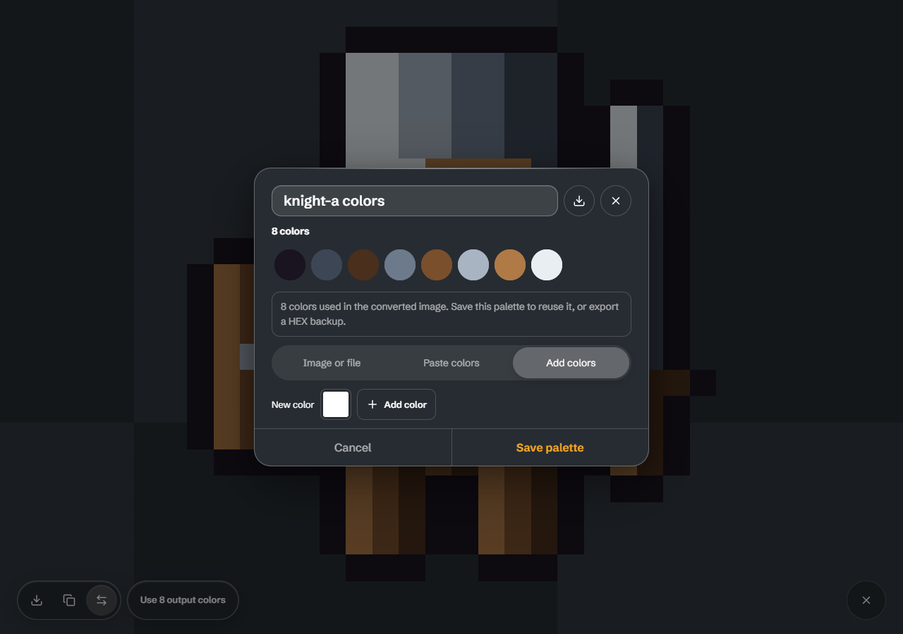
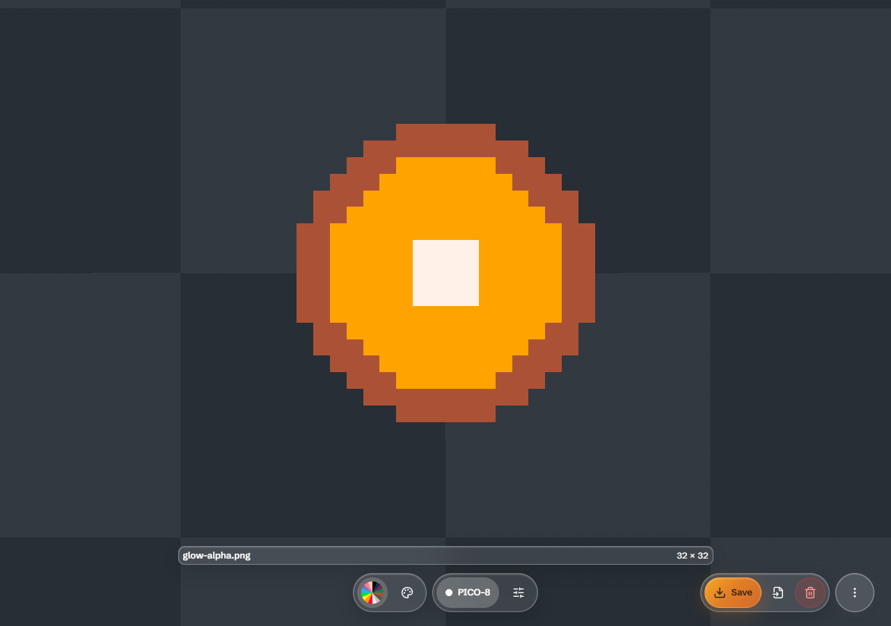
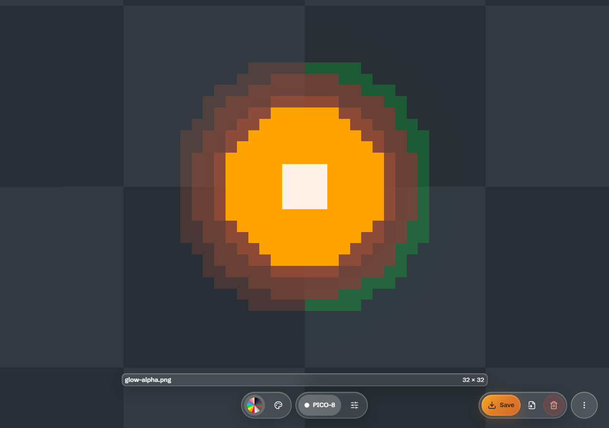

Output colors and transparencyCount full output colors in Preview
BEFORE · f08d4d3
AFTER · d91d9d1 Open used colors as a palette draft
BEFORE · f08d4d3
AFTER · d91d9d1
Cut before / optional Keep after · PICO-8, same soft glow
BEFORE · f08d4d3
AFTER · d91d9d1